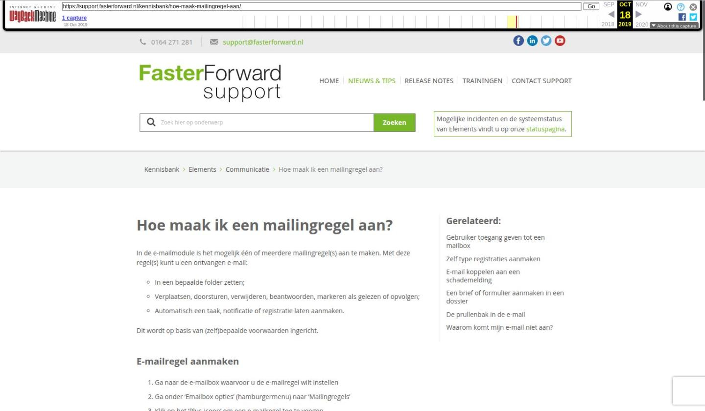

Hoe maak ik een mailingregel aan?

Tekstinhoud
Hoe maak ik een mailingregel aan?
In de e-mailmodule is het mogelijk één of meerdere mailingregel(s) aan te maken. Met deze regel(s) kunt u een ontvangen e-mail:
In een bepaalde folder zetten;
Verplaatsen, doorsturen, verwijderen, beantwoorden, markeren als gelezen of opvolgen;
Automatisch een taak, notificatie of registratie laten aanmaken.
Dit wordt op basis van (zelf)bepaalde voorwaarden ingericht.
E-mailregel aanmaken
Ga naar de e-mailbox waarvoor u de e-mailregel wilt instellen
Ga onder 'Emailbox opties' (hamburgermenu) naar 'Mailingregels'
Klik op het 'Plus-icoon' om een e-mailregel toe te voegen
Algemeen
Geef de mailingregel een 'naam' en 'omschijving';
Kies ervoor of de mailingregel aan één of alle voorwaarden moet voldoen (deze voorwaarden stelt u straks in)
Let op! Zet de 'Actief' op 'Ja' als u er mee wilt werken. Wanneer u de mailingregel weer wilt uitschakelen zet u deze optie weer op 'Nee'
Direct stoppen na verwerken van deze mailingregel is van toepassing wanneer u meerdere mailingregels instelt. Wanneer dit het geval is, kunt u middels deze optie bepalen of er na uitvoeren van de betreffende regel direct gestopt moet worden (vink ja aan) of dat er na het uitvoeren van deze regel doorgegaan moet worden met de volgend regel (vink nee aan).
Voer de start- en einddatum in. Hiermee bepaalt u van wanneer tot wanneer de mailingregel van kracht is.
Klik tot slot op het 'vinkje' om de mailingregel op te slaan. Er komen nu twee tabbladen bij.
Voorwaarden
Onder de tab 'Voorwaarden' worden de voorwaarden ingesteld. Er zijn diverse mogelijkheden die u terugvindt in de dropdown.
Bijvoorbeeld:
Acties
Onder de tab 'Acties' wordt ingegeven wat het systeem moet doen indien aan de voorwaarde is voldaan die u zojuist heeft ingegeven. Er zijn diverse acties mogelijk die in de drop down bij 'Maak uw keuze' wordt weergegeven.
In dit voorbeeld worden alle e-mails met de prioriteit hoog, vanuit de mailbox Arnold Wagenaar, worden verplaatst naar de folder Ongewenst.
Toepassen mailingregel
Nadat u de mailingregel heeft ingesteld is deze nog niet actief, deze kun je actief zetten door in het tabblad 'Algemeen' de mailingregel aan te vinken en te klikken op 'Geselecteerde mailingregel(s) toepassen'. Mailingregels kunnen alleen gewijzigd en/of verwijderd worden indien het proces alle e-mails volledig verwerkt heeft.
Let op: om de mailingregels uit te voeren dient het proces hiervoor actief te zijn, hiervoor kunt u bellen naar onze support afdeling 0164-271 281.
Onderstaand vindt u de instructiefilm:
Laatste update: 5 juni 2019
Tagged: e-mailregel, door sturen, e-mailregels, mailingregels
Was deze informatie nuttig?
Ja Nee